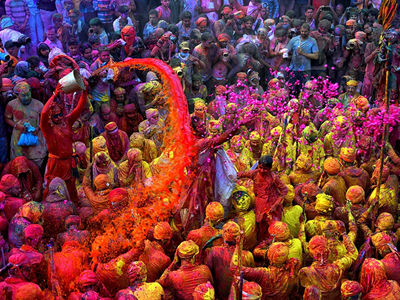
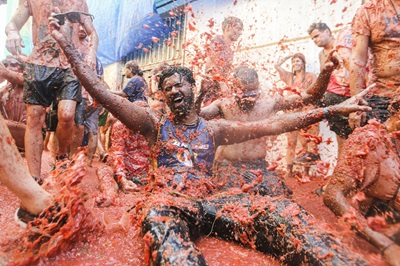

The Holi Festival: The Holi Festival, also known as the Festival of Colors, is a vibrant and jubilant celebration that marks the arrival of spring in India. During Holi, people gather in streets and parks to splash each other with colorful powders and water, symbolizing the triumph of good over evil and the blossoming of love and joy. This ancient festival, deeply rooted in Hindu mythology, fosters a sense of community as barriers of age, gender, and social status dissolve amidst the festive cheer. Special songs, dances, and a variety of delicious treats add to the lively atmosphere, making Holi one of the most cherished occasions across the country.
The Tomatina: La Tomatina is a vibrant and exhilarating festival held annually in the small town of Buñol, Spain. During this event, thousands of participants gather to engage in the world's largest tomato fight, using overripe tomatoes as their ammunition. The streets turn red as the hour-long battle ensues, creating a lively and unforgettable atmosphere. Originating from a spontaneous event in 1945, La Tomatina has grown into a major tourist attraction, celebrated on the last Wednesday of August each year.
| Festival Name | Location | Date(s) |
|---|---|---|
| Holi Festival | India | March 15th 2025 |
| La Tomatina | Spain | August 27th 2025 |
| Pingxi Lantern Festival | Taiwan | February 12th 2025 |
| Burning Man | Nevada, USA | August 24 2025 – September 1 2025 |